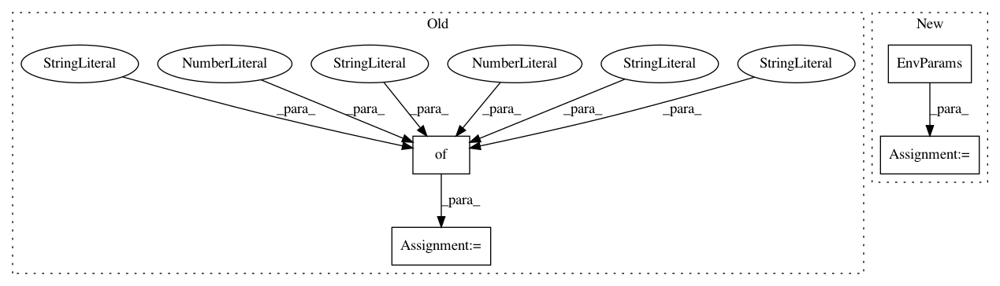

f266a6bf354fb78658d03b557fa3cef186b128a8,examples/rllab/cooperative_merge.py,,run_task,#,25
Before Change
env_params = EnvParams(horizon=HORIZON,
additional_params=additional_env_params)
additional_net_params = {"ring_radius": 50, "lanes": 1,
"lane_length": 75, "speed_limit": 30,
"resolution": 40}
net_params = NetParams(
no_internal_links=False,
additional_params=additional_net_params
)
After Change
),
sumo_lc_params=SumoLaneChangeParams())
env_params = EnvParams(
horizon=HORIZON,
additional_params={
"max_accel": 3,
"max_decel": 3,
"target_velocity": 10,
"n_preceding": 2,
"n_following": 2,
"n_merging_in": 2,
}
)
additional_net_params = ADDITIONAL_NET_PARAMS.copy()
additional_net_params["ring_radius"] = 50
additional_net_params["inner_lanes"] = 1
In pattern: SUPERPATTERN
Frequency: 3
Non-data size: 4
Instances
Project Name: flow-project/flow
Commit Name: f266a6bf354fb78658d03b557fa3cef186b128a8
Time: 2018-08-09
Author: akreidieh@gmail.com
File Name: examples/rllab/cooperative_merge.py
Class Name:
Method Name: run_task
Project Name: flow-project/flow
Commit Name: cf0db8df8bc178f0b35766b7f3c7fca9772a23f7
Time: 2017-09-07
Author: kanaadp@gmail.com
File Name: cistar_dev/examples/figure8_test.py
Class Name:
Method Name:
Project Name: flow-project/flow
Commit Name: 28b657fc3e287873473a43da01b4db4b64d1ad03
Time: 2017-10-12
Author: kanaadp@users.noreply.github.com
File Name: examples/two_loops_two_mergin_test.py
Class Name:
Method Name: